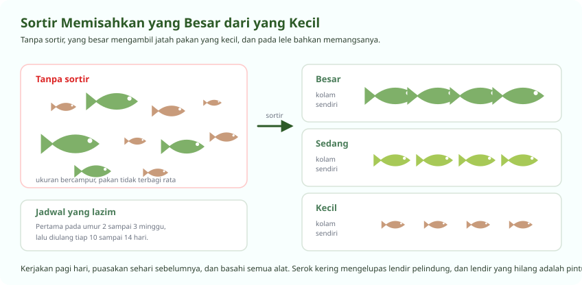

Memilih Benih, Keputusan yang Tidak Bisa Diulang
Benih buruk tidak bisa diperbaiki pakan sebagus apa pun
Satu siklus budidaya berjalan dua sampai empat bulan. Kalau benihnya lemah sejak hari pertama, Anda menghabiskan seluruh waktu itu untuk memelihara kerugian. Karena itu memilih benih pantas dikerjakan lebih teliti daripada menawar harganya.
| Yang dilihat | Benih baik | Benih yang harus ditolak |
|---|---|---|
| Ukuran dalam satu wadah | Seragam, selisih kecil | Beragam jauh, ada yang jauh lebih besar |
| Gerakan | Lincah, melawan arus, menyebar merata | Diam di dasar, berenang miring, berkumpul di sudut |
| Warna dan permukaan tubuh | Cerah, sisik dan lendir utuh | Pucat, ada luka, sirip geripis, bercak putih |
| Reaksi saat wadah disentuh | Langsung menghindar serentak | Lambat bereaksi atau tidak bereaksi sama sekali |
| Asal dan riwayat | Pembenih jelas, ada catatan induk dan pakan | Tidak diketahui asalnya, tidak ada catatan |
Aklimatisasi, Lima Belas Menit yang Menentukan
Perpindahan mendadak membunuh lebih banyak benih daripada penyakit
-
Matikan atau redupkan cahaya, jangan tebar di siang terik
Tebar pada pagi sebelum pukul delapan atau sore setelah pukul empat. Suhu air kolam paling dekat dengan suhu air pengangkutan pada jam itu.
-
Apungkan kantong benih di permukaan kolam 15 sampai 20 menit
Ini menyamakan suhu tanpa mencampur air. Selisih suhu lebih dari 3 derajat sudah cukup membuat benih tertekan, dan selisih 5 derajat bisa mematikan.
-
Buka kantong, masukkan air kolam sedikit demi sedikit
Tambahkan sekitar seperempat volume kantong setiap lima menit, sebanyak tiga sampai empat kali. Ini menyamakan pH, salinitas, dan kandungan lain secara bertahap.
-
Miringkan kantong dan biarkan benih keluar sendiri
Jangan dituang atau diguyur. Benih yang keluar atas kemauannya sendiri jauh lebih sedikit yang stres. Air dari kantong sebaiknya tidak ikut masuk ke kolam.
-
Puasakan benih pada hari pertama
Jangan memberi pakan di hari penebaran. Saluran cerna benih masih terganggu perjalanan, dan pakan yang tidak dimakan hanya menjadi amonia.
-
Hitung yang mati pada 24 sampai 48 jam pertama
Kematian di dua hari pertama menandakan masalah pengangkutan atau aklimatisasi. Kematian yang mulai di hari kelima ke atas biasanya menandakan masalah kualitas air atau penyakit.
Padat Tebar
Angka yang harus disesuaikan dengan aerasi, bukan dengan keinginan
| Sistem | Nila (ekor per meter kubik) | Lele (ekor per meter kubik) | Syarat |
|---|---|---|---|
| Kolam tanah tradisional | 5 sampai 10 | 50 sampai 100 | Tanpa aerasi tambahan |
| Kolam terpal biasa | 20 sampai 50 | 100 sampai 200 | Aerasi ringan, ganti air rutin |
| Bioflok | 100 sampai 150 | 200 sampai 400 | Aerasi 24 jam, listrik cadangan wajib |
| Bioflok intensif berpengalaman | Sampai 200 | Sampai 500 | Pemantauan harian ketat, tidak untuk pemula |
Lele tahan padat tebar dua sampai tiga kali lipat nila karena punya organ arborescent yang membuatnya bisa mengambil udara langsung dari permukaan. Nila tidak punya itu, dan sepenuhnya bergantung pada oksigen terlarut.
Pemula sebaiknya selalu mulai dari batas bawah. Padat tebar tinggi menuntut aerasi, pakan, dan kedisiplinan mengukur yang sama tingginya, dan kegagalan pada kepadatan tinggi berlangsung jauh lebih cepat.
Sortir dan Grading
Pekerjaan yang paling sering ditunda, dan paling mahal akibatnya
Dalam satu kolam, ikan tidak tumbuh seragam. Yang lebih besar makan lebih banyak dan tumbuh lebih cepat lagi, sementara yang kecil makin tertinggal. Pada lele, yang besar bahkan memangsa yang kecil.
Sortir memisahkan mereka ke kolam berbeda supaya masing-masing mendapat pakan yang sesuai dan yang kecil punya kesempatan mengejar.

| Umur | Ukuran rata-rata | Selang sortir | Yang diperhatikan |
|---|---|---|---|
| 2 sampai 3 minggu | Sekitar 3 sampai 5 cm | Sortir pertama | Paling rawan, benih masih sangat lunak |
| 1 bulan | Sekitar 5 sampai 8 cm | Setiap 10 sampai 14 hari | Kanibalisme mulai muncul di sini |
| 2 bulan | Sekitar 8 sampai 12 cm | Setiap 2 minggu | Selisih ukuran paling melebar |
| Menjelang panen | Ukuran konsumsi | Sekali sebelum panen | Sekaligus menyeragamkan ukuran jual |
Cara menyortir tanpa membuat ikan stres
-
Puasakan ikan satu hari sebelumnya
Perut yang kosong mengurangi kotoran di bak sortir dan menurunkan pemakaian oksigen saat ikan berdesakan.
-
Kerjakan pagi hari saat suhu masih rendah
Air yang lebih sejuk menyimpan lebih banyak oksigen dan ikan lebih tenang. Hindari siang terik sama sekali.
-
Pakai bak bergradasi atau ember berlubang, jangan tangan
Bak sortir dengan celah berjenjang memisahkan ukuran tanpa banyak menyentuh ikan. Tangan dan serok kasar merusak lendir pelindung tubuh.
-
Basahi semua alat lebih dulu
Serok dan bak yang kering akan menempel pada lendir ikan dan mengelupasnya. Lendir yang hilang adalah pintu masuk jamur dan bakteri.
-
Kerjakan cepat, jangan biarkan ikan menumpuk lama
Batasi setiap batch beberapa menit saja. Sediakan aerasi di bak penampungan sementara kalau jumlahnya banyak.
-
Beri garam di kolam tujuan setelah sortir
Garam dosis rendah membantu memulihkan lendir dan mengurangi tekanan osmotik. Puasakan lagi satu hari setelah sortir sebelum pakan dilanjutkan.
Pertanyaan Seputar Modul Ini
Yang paling sering ditanyakan peserta
Sortir lele sebaiknya berapa hari sekali?
Sortir pertama pada umur dua sampai tiga minggu, lalu diulang setiap sepuluh sampai empat belas hari sampai menjelang panen. Selang ini mengikuti kecepatan pertumbuhan, bukan tanggal tetap.
Yang menentukan sebenarnya bukan umur melainkan selisih ukuran. Begitu terlihat ada kelompok yang jelas lebih besar, saat itulah waktunya menyortir. Menunda berarti membiarkan yang besar memangsa yang kecil dan mengambil jatah pakannya.
Bagaimana cara sortir lele agar tidak stres?
Puasakan sehari sebelumnya, kerjakan pagi hari saat suhu masih rendah, dan pakai bak sortir bergradasi, bukan tangan. Basahi semua alat lebih dulu supaya lendir pelindung tubuh ikan tidak terkelupas.
Kerjakan cepat dan jangan biarkan ikan menumpuk lama dalam wadah sempit. Setelah selesai, beri garam dosis rendah di kolam tujuan untuk membantu pemulihan lendir, lalu puasakan lagi satu hari sebelum pakan dilanjutkan.
Berapa padat tebar lele di kolam terpal dan bioflok?
Kolam terpal biasa dengan aerasi ringan dan penggantian air rutin sanggup 100 sampai 200 ekor per meter kubik. Sistem bioflok dengan aerasi 24 jam sanggup 200 sampai 400 ekor per meter kubik.
Untuk nila angkanya jauh lebih rendah, yaitu 20 sampai 50 di kolam terpal biasa dan 100 sampai 150 di bioflok. Lele tahan lebih padat karena bisa mengambil udara langsung dari permukaan, sedangkan nila sepenuhnya bergantung pada oksigen terlarut.
Bagaimana cara aklimatisasi benih ikan yang benar?
Apungkan kantong benih di permukaan kolam selama lima belas sampai dua puluh menit untuk menyamakan suhu. Setelah itu buka kantong dan masukkan air kolam sedikit demi sedikit, sekitar seperempat volume kantong setiap lima menit, tiga sampai empat kali.
Miringkan kantong dan biarkan benih keluar sendiri, jangan dituang. Air dari kantong sebaiknya tidak ikut masuk ke kolam. Puasakan benih pada hari pertama, karena pakan yang tidak dimakan hanya menjadi amonia.
Kenapa banyak benih mati beberapa hari setelah ditebar?
Waktu kematiannya memberi tahu penyebabnya. Kematian pada 24 sampai 48 jam pertama hampir selalu karena pengangkutan atau aklimatisasi yang terburu-buru, terutama selisih suhu yang terlalu jauh.
Kematian yang baru mulai pada hari kelima ke atas biasanya menandakan kualitas air, umumnya amonia yang naik karena flok belum terbentuk, atau penyakit yang terbawa dari pembenih. Periksa amonia, nitrit, dan oksigen lebih dulu sebelum menduga penyakit.
Seluruh modul boleh dibaca berurutan atau melompat sesuai kebutuhan. Lihat daftar pelatihan budidaya ikan, atau semua jalur pelatihan.